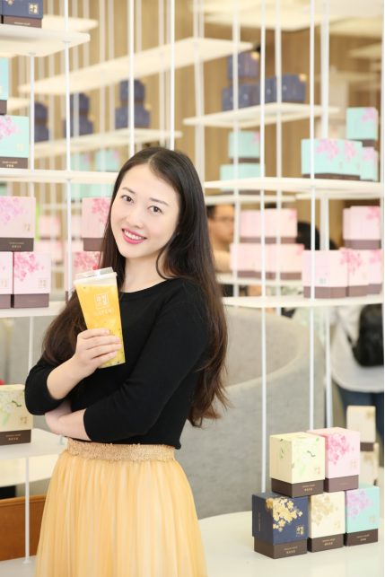

彭心，奈雪的茶创始人兼首席产品研发官。1987年出生，曾获得2020年度“中国最具影响力的30位商界女性”、第八届“深圳十大青年”、2019年“大湾区杰出女企业家”等奖项。2014年，她创立了“深圳市品道餐饮管理有限公司”，2015年6月，正式创立“奈雪的茶”。如今，她的公司旗下拥有“奈雪的茶”、“台盖”、“梨山”三个高端、时尚的茶饮品牌。
其实对于彭心来说，做茶饮品牌并不是她一开始的想法。在最初，彭心想开一家烘焙店，而在她探索烘焙的过程中却接触到了茶饮，彭心发觉中国的茶文化博大精深，她慢慢地陷入对茶饮的研究中。
有些年轻人认为饮茶应该是一套周全的仪式，要配盖碗、茶杯、茶夹等器具，还要求一定的冲泡技巧。但彭心不这么认为，她说：“茶在每个时代都有它自己存在的形式，唐朝喝煮的茶，宋朝喝点的茶，明清大家才开始喝条形叶状的茶。”在彭心的想法里，所谓的形式是由人定义的，而奈雪的茶要做的是让年轻人喜欢茶，而不是固守地认为茶就应该怎样喝，应该用什么器皿，或者喝什么产地才代表身份和高级。
“我觉得茶还是要回到生活，它就是一种传统，这种传统必须是年轻人喜欢的才能被传承。”正是抱着这样的想法，彭心才决定踏入陌生的茶饮行业，并带着奈雪的茶一路走到现在。
